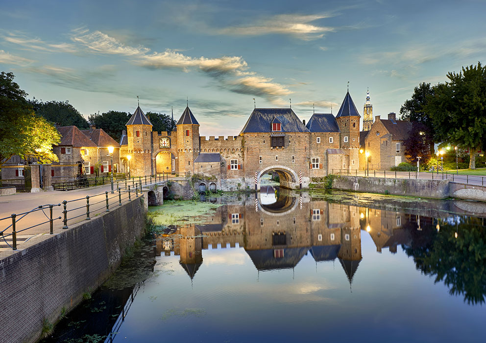
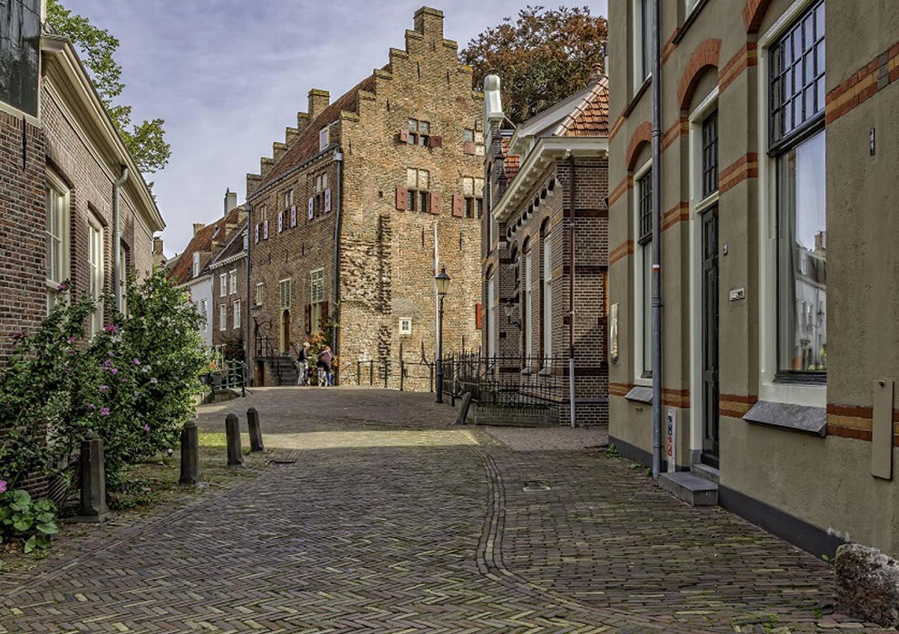

De Koppelpoort
Het visitekaartje van Amersfoort
De Koppelpoort is een unieke combinatie van een landpoort en een waterpoort, de enige in Nederland. Deze stamt uit ca 1425 en maakt deel uit van de tweede omwalling van de stad.
In zo’n 30 minuten ontdekt je alle ‘geheimen’ tijdens een complete rondleiding in en bovenop de poort; een verrassende ervaring! Dit is exclusief en uitsluitend mogelijk onder leiding van een gids van Gilde Amersfoort. Een korter bezoek aan de poort is een vast onderdeel van elke stadswandeling en bij de prijs daarvan inbegrepen. De poort is ook van binnen te bezichtigen door middel van een rondleiding. Wie tijdens de rondleiding in één van de trendmolen loopt krijgt bovendien het Raddraaierscertificaat.
De Koppelpoort is op afspraak te bezoeken.
*Deze locatie is onderdeel van de Grebbelinie route. Speel de video af als u op locatie bent:
Muurhuizen
Een wandeling door het verleden
 Wanneer je door de Muurhuizen loopt waan je je in de middeleeuwen. Toen de stad zich als gevolg van de economische bloei in 1380 begon uit te breiden, moest er een nieuwe stadsmuur gebouwd worden. De oude muur werd afgebroken en vanaf ongeveer 1500 werden er huizen gebouwd met het materiaal van de oude muur langs de lijn waar de stadsmuur had gestaan. Doordat de constructie van deze huizen plaats heeft gevonden in verschillende perioden is er een grote diversiteit aan vormen ontstaan.
Bekende gebouwen in de Muurhuizen:
Museum Flehite: Museum Flehite is gevestigd in drie laat-middeleeuwse muurhuizen, gebouwd omstreeks 1540. In de loop der eeuwen zijn de oorspronkelijke woonhuizen ook voor andere doelen gebruikt, zoals pakhuis of zelfs militair hospitaal.
Nieuwenburgh: dit pand op nummer 5-7, heeft een gevelsteen uit 1645, die het huis afbeeldt zoals het er toen moet hebben uitgezien.
De Bollenburgh: het huis waar de in Amersfoort geboren landsadvocaat Johan van Oldenbarnevelt (1547-1619) zijn jeugd heeft doorgebracht. Later heeft het huis op nummer 19 nog dienst gedaan als stadslint- en spinhuis, een soort werkhuis voor jongens en meisjes.
Huis Tinnenburg: in de zijgevel zie je de aanzetten van de eerste stadsmuur. Hier stroomde het water van de Heiligenbergerbeek door de eerste stadsommuring. Na de 15e eeuw werd Tinnenburg op nummer 25 genoemd als koopmanshuis en wat later in dit pand kwam, een katoenspinnerij.
Plompe- of Dieventoren: dit opvallende vierkante hoge gebouw is onderdeel van de stadsverdediging en stadsgevangenis tot in de 19e eeuw. De poortdoorgang is een foutieve restauratie uit de 20e eeuw. De dieventoren op nummer 97 wordt ook wel 'Latijntje' genoemd, afkomstig van de toenmalig afgebroken Latijnse School.
Het Secretarishuisje: het huis op nummer 109 ontleent zijn naam aan stadssecretaris Mr. Jan Both Hendriksen, die het pand in 1776 ingrijpend liet verbouwen.